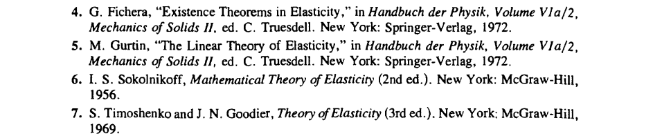
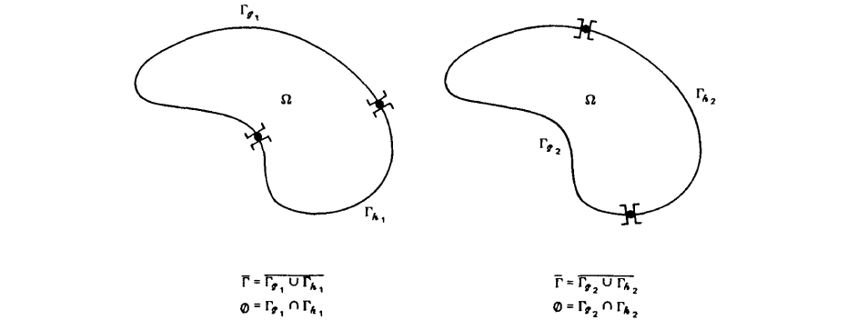
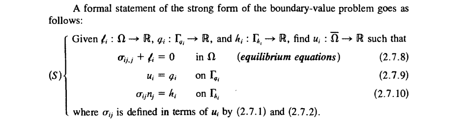
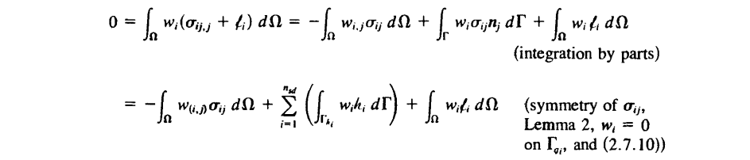
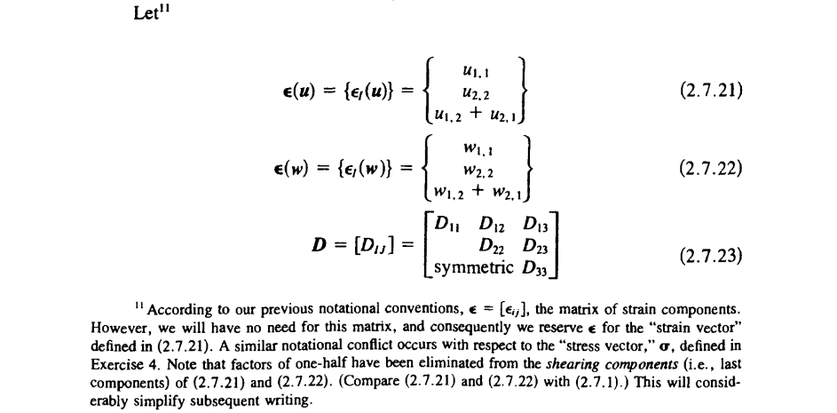
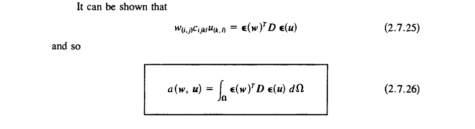
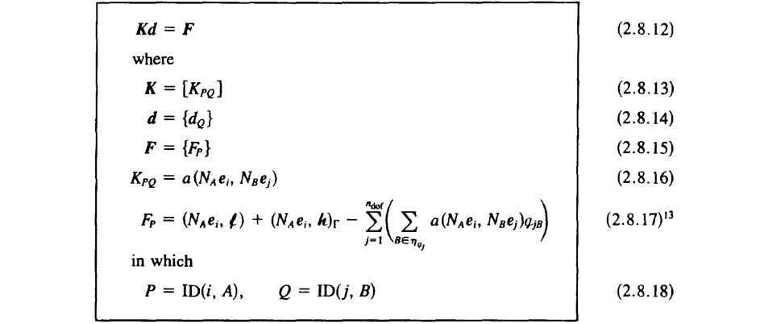
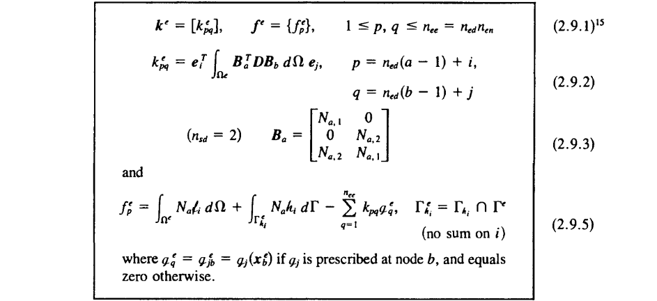
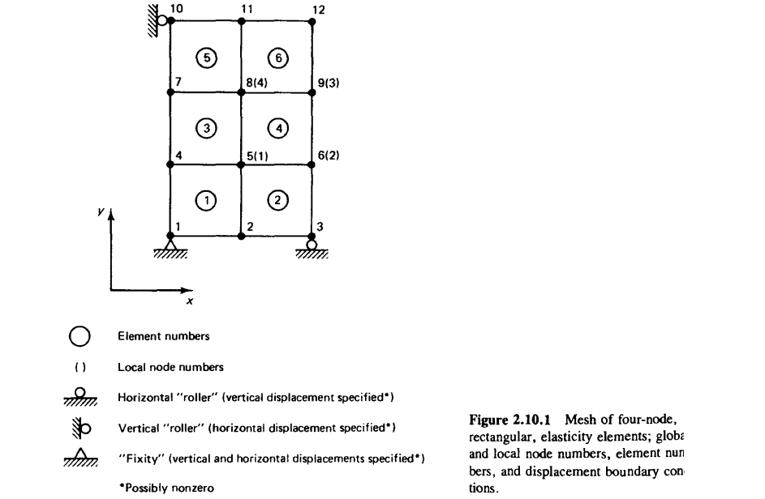

Elastostatics
Finite Element Method, ME 477
2026 Fall
Classical Linear Elastostatics
\(\leftarrow\) Previous Lecture
- Classical elastostatics is a rich subject in its own right.

- Let \(\sigma_{ij}\) denote the stress tensor, let \(u_i\) denote the displacement vector, and let \(\mathscr{f}_i\) be the prescribed body force per unit volume. The (infinitesimal) strain tensor, \(\epsilon_{ij}\), is defined as the symmetric part of the displacement gradients, viz., \[ \epsilon_{ij} = u_{(i,j)} = \frac{u_{i,j} + u_{j,i}}{2} \] These are also known as the strain-displacement equations.
Generalized Hooke’s Law
The stress tensor is defined in terms of the strain tensor by the generalized Hooke’s law:
\begin{align} \sigma_{ij} & = c_{ijkl} \epsilon_{kl} \\ & = c_{ijkl} u_{(k,l)} \end{align}where the \(c_{ijkl}\)’s, the elastic coefficients, are point functions. If these coefficients are constant througout, the body is called homogeneous. This is another constitutive equation.
- The elastic coefficients are assumed to satisfy symmetry properties which allow the interchanging indices
- major symmetry \[ c_{ijkl} = c_{klij} \]
- minor symmetries \[ \begin{align*} c_{ijkl} = c_{jikl} \\ c_{ijkl} = c_{ijlk} \end{align*}\]
Upgrading from a Scalar to a Vector Solution Variable
- The unknown solution variable is a vector, which necessitates the generalization of the boundary conditions per vector component: \[ \left. \begin{align*} \Gamma & = \overline{\Gamma_{\mathscr{g}_i} \cup \Gamma_{\mathscr{h}_i}} \\ \varnothing & = \overline{\Gamma_{\mathscr{g}_i} \cap \Gamma_{\mathscr{h}_i}} \end{align*} \right\} \hspace{2em} i=1,\ldots,n_{sd} \]

(\(\S2.7\)) Strong (\(S\)) and Weak (\(W\)) Forms
Strong Form

- The functions \(\mathscr{g}_i\) and \(\mathscr{h}_i\) are called the prescribed boundary displacements and tractions, respectively.
- The additional complexity is that the unknown (i.e., \(\boldsymbol{u} = u_i\)) is vector-valued.
Weak Form
- Let \(\delta_i\) denote the trial solution space and \(\mathscr{V}_i\) the weight space. Each member \(u_i \in \delta_i\) satisfies \(u_i = \mathscr{g}_i\) on \(\Gamma_{\mathscr{g}_i}\), whereas each \(w_i \in \mathscr{V}_i\) satisfies \(w_i=0\) on \(\Gamma_{\mathscr{g}_i}\).
- The weak formulation goes:

- (\(W\)) is also referred to as the principle of virtual work or principle of virtual displacements.
- Note the use of summation symbol in the last term in order to preserve the validity of the indicial expression (in the last term the index \(i\) repeats three times).
Proof
- Lemma 1. Let \(s_{ij}\) be a nonsymmetric second-rank tensor. Then \(s_{ij} = s_{(ij)} + s_{[ij]}\), where \(s_{(ij)}\) is symmetric (i.e., \(s_{(ij)} = s_{(ji)}\)) and \(s_{[ij]}\) is skew-symmetric (i.e., \(s_{[ij]} = - s_{[ji]}\)).
- Lemma 2. Let \(s_{ij}\) be a nonsymmetric tensor and \(t_{ij}\) be a symmetric tensor. Then \[ s_{ij} t_{ij} = s_{(ij)} t_{ij} \]

Abstract Notation
With the operator definitions given below
Note the replacement of \(w_{(i,j)} \sigma_{ij} = w_{(i,j)} c_{ijkl} u_{(i,j)}\). The weak form can be re-written using these operators.

Reorganizing Strain Tensor Components into a Strain Vector
- In order to increase the readability and facilitate computer implementation, the symmetric parts of the gradients of the weight and trial functions, i.e. \(w_{(i,j)}\) and \(u_{(i,j)}\), respectively, are recast into vector form, resulting with the definition of the so-called strain vector operator, \(\boldsymbol{\epsilon}\)

Reduced Elasticity Matrix Variants, \(\boldsymbol{D}\)
- This reduction of order necessitates a similar reduction of the fourth order elasticity tensor, \(c_{ijkl}\), to a second order tensor, \(D_{IJ}\).
\(D_{IJ}\) are elasticity coefficients related to \(c_{ijkl}\), associated by the relations below.
The above table of conversion is valid for a 2-D plane strain model (\(\epsilon_{33} = 0\)).
- Slight modification of the coefficients will be required for other 2-D model variants.
- 2-D Plane Stress Model, \(\sigma_{33} = 0\).
- 2-D Axisymmetric Model.
Dimensional Reduction of \(w_{(i,j)}c_{ijkl} u_{(k,l)}\)
As a result of reorganizing the components of higher order tensors into lower order tensors,

(\(\S2.8\)) Galerkin Formulation

Computer Implementation
- To define the global stiffness and load arrays for a vector-valued problem, it is necessary to introduce the ID array.
- The variable \(n_\mathrm{dof}\), is defined as the number of degrees of freedom per node, is defined.

- ID has dimensions \(n_\mathrm{dof} \times n_{np}\).
Modifying Sets and Introducing Shape Functions
- Recall the set of global node numbers, \(\eta = \{1,2,\ldots,n_{np}\}\).
- Let \(\eta_{\mathscr{g}_i} \in \eta\) be the set of nodes at which \(u_i^h = \mathscr{g}_i\) and let \(\eta - \eta_{\mathscr{g}_i}\) be the complement of \(\eta_{\mathscr{g}_i}\).
- For each node in \(\eta - \eta_{\mathscr{g}_i}\), the nodal value of \(u_i^h\) is to be determined.
- The explicit representations of \(v_i^h\) and \(\mathscr{g}_i^h\), in terms of the shape functions and nodal values are
Basis Vectors and Tensor Notation
Let \(\boldsymbol{e}_i\) denote the $i$th Euclidean basis vector for \(\mathbb{R}^{n_{sd}}\) as
The trial and weight functions can now be expressed in their tensor forms

Matrix Form (Global Scheme)
Introducing the variables in their tensor forms into the Galerkin form in it’s abstract notation, we get

This is equivalent to the matrix equation

Introducing the Strain-Displacement Operator
It is customary to express the stiffness components using the strain-displacement operator, \(\boldsymbol{B}\), which is defined for \(n_{sd}=2\) as
With these, the stiffness components can be restated in their customary finite element notation as
where \(P = \mathrm{ID}(i,A)\) and \(Q = \mathrm{ID}(j,B)\).
(\(\S2.9\)) Element Arrays (Local Scheme)
- In defining \(\boldsymbol{k}^e\) and \(\boldsymbol{f}^e\), we introduce a number of additional programming parameters for convenience:
- \(n_{ed}\): number of element degrees of freedom per node. Note that it is possible to have \(n_{ed} \leq n_\mathrm{dof}\).
- \(n_{en}\): number of nodes per element
- \(n_{ee}\): number of element equations, \(n_{ee} = n_{ed} n_{en}\).

Element Calculations
- Let \(n_{sd} = 2\). The displacement at node \(a\) in element \(e\) is \[ \boldsymbol{d}_a^e = \begin{Bmatrix} d_{1a}^e \\ d_{2a}^e \end{Bmatrix} \] where \(d_{ia}^e = u_i^h(x_a^e)\)
- The stress at a given point \(\boldsymbol{x} \in \Omega^e\) can be calculated by \[ \boldsymbol{\sigma}(\boldsymbol{x}) = \boldsymbol{D} \sum_{a=1}^{n_{en}} \boldsymbol{B}_a(\boldsymbol{x}) \boldsymbol{d}_a^e \]
Examples
2-D Mesh
Study the essential B.C.’s in the below mesh of four-node rectangular elements below
